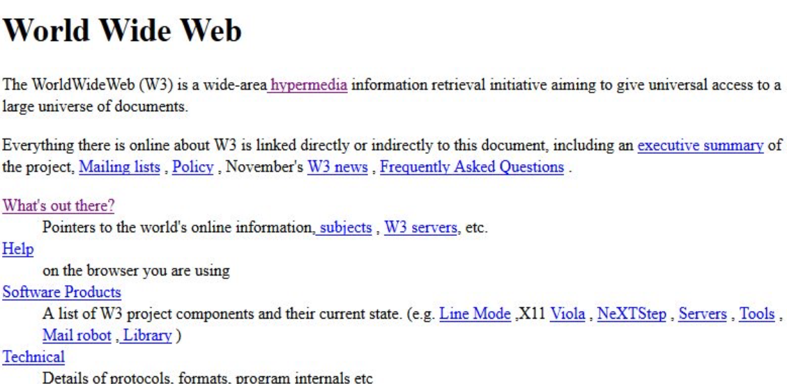
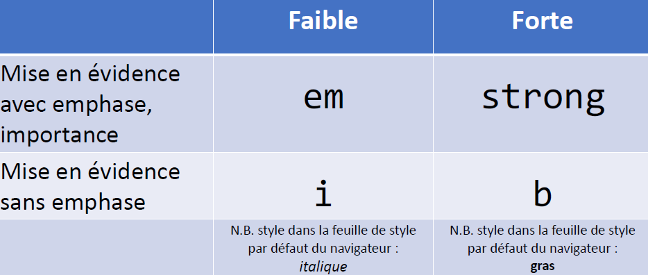

- Accueil
- Edit
-
View
-
Zoom
- Status Bar
-
Zoom
- Help
Synthèse HTML basé sur le cours théorique
Pour accéder aux différents chapitres, rendez vous dans le menu de navigation et accéder à tous les différents chapitres du cours.
Historique
Naissance de l'HTML en 1991 par Tim Berners-Lee.
L'HTML à pour but de structurer le contenu.
Tim montre sa révolution

La première page web à été inventée en 1993 par le CERN
Tim montre sa révolution
Sémantique
La sémantique nous permet de mieux comprendre et connaitre le fonctionnement des balises, dans ce chapitre les balises sont détaillées possède une decription et un exemple à chaque fois, l'exemple est simplement l'affichage dans le navigateur des balises utilisées. En programmation, la sémantique fait référence au sens d'une partie de code — par exemple "quel effet aura l'exécution de cette ligne de JavaScript ?", ou "quel est le rôle ou le but de cet élément HTML (plutôt que "à quoi ressemble-t-il ?".)"
La balise <a>
La balise a (anchor) permet de baliser un hyperlien, il est important de lui rajouter des attributs qui sont : href, hreflang, title.
href contient le lien vers là ou la balise a doit redirigée
hreflang doit contenir une langue, permet de préciser la langue d'où la balise "a" redirige
title permet d'indiquer le texte que l'on voit quand l'on passe notre souris sur le lien
Exemple :
CECI EST UN LIENLa balise <abbr>
abbr est le diminutif de abbréviation, il permet de faire en sorte que quand l'on passe notre souris sur une abbréviation elle affiche le vrai mot.
On ajoute l'attribut title pour le résultat.
Exemple :
HTMLLa balise <dfn>
dfn est le diminutif de définition, on l'utilise donc pour expliquer qu'on expliquer un terme spécifique.
Exemple :
Le CSS est un langage servant à styliser l'html.
La balise <em>
La balise em sert à mettre en évidence un élément important exemple : JE SUIS IMPORTANT.
La balise <strong>
La balise strong permet de mettre un élement très important en évidence, exemple : JE SUIS TRES IMPORTANT.
La balise <i>
Simplement quand on spécifie quelque chose à l'italique exemple : L'html c'est facile (si tu pratiques).
La balise <b>
Permet de mettre en évidence mais sans intérêt d'importance.
Exemple : L'html est un langage de script et non de programmation car on utilise pas de variable ni d'objet.
Tableau pour choisir entre em, strong, i, b
La balise <mark>
Permet de surligner un élement textuel, sert à mettre en évidence pour servir de référence pour les moteurs de recherche
Exemple :
J'aime manger des bonbons des patisseries, j'adore aussi la charcuterie
La balise <u>
Permet de signifier que l'on doit modifier le texte en question plus tard.
Exemple : Ceci est une fautes.
La balise <small>
Permet d'écrire en petit caractère d'imprimerie, utile pour une précision ou une licence d'utilisation ect...
Exemple : Ce site est sous licence d'utilisation CC-by-sa
La balise <sub> et <sup>
Sub permet de mettre en indice Exemple : H2O
sup permet de mettre en exposant Exemple : 42
La balise <cite>
Utilisé pour citer la source d'une citation.
Exemple : Comme le dit Nietzsche : Il n’y a pas de faits, il n’y a que des interprétations.
La balise <q>
Permet de cite une courte citation.
Exemple : Dans Le Loup des Steppes de Hermann Hesse : Pour atteindre une forme supérieure de l'humour, il faut commencer par ne plus prendre au sérieux sa propre personne.
La balise <bdo>
Permet de modifier la direction du texte en utilisant l'attribut dir et les valeurs :
ltr : left to right
rtl : right to left
Exemple : Ce texte est dans l'autre sense.
La balise <code>
Utilisé pour montrer une ligne de code, si le code est en html il faut utiliser les caractes suivants pour remplacer les <>.
& lt; pour <
& gt; pour >
On utilise <pre> devant <code> pour garder les indentations.
La balise <kbd>
Permet d'afficher des touches de clavier, pratique pour montrer des raccourics.
Exemple : Pour revenir en arrière faites ctrl+z.
La balise <samp>
Permet d'afficher un message de sortie de system Exemple : Erreur system32.
La balise <var>
Permet d'afficher une variable mathématique Exemple : y = x + 2.
La balise <br>
Permet d'appliquer un retour chariot.
Exemple : Ceci est un
br.
La balise <meter>
Permet l'affichage d'une jauge en rajoutant les attributs :
value : valeur de la jauge.
max : valeur maximale de la jauge.
Exemple : Pourcentage de batterie : 10%
La balise <progress>
Dans le meme sens que meter elle permet d'afficher une barre de progression avec les attributs :
value : valeur de la barre.
max : valeur max qu'elle peut atteindre.
Exemple : Téléchargement en cours 40% :
La balise <span>
Permet d'isoler un élement d'une partie du texte, il à une utilité équivalente au div mais lui est utiliser dans des portions de textes
Exemple :Ce morceau de texte est entouré d'une balise span cette même balise possède des attributs css qui la stylise avec une classe attriuée nommée exemplespan.